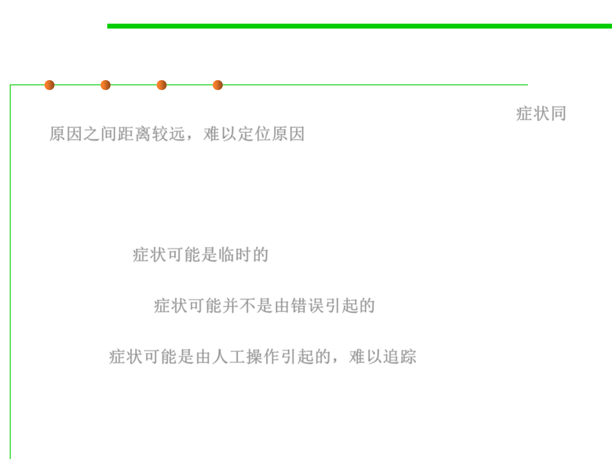

Why is debugging so difficult?
7.4 Debugging
▪ The symptom and the cause may be geographically remote. 症状同
原因之间距离较远，难以定位原因
– The symptom may appear in one part of a program, while the cause may
actually be located at a site that is far removed.
– Highly coupled components exacerbate this situation.
▪ The symptom may disappear (temporarily) when another error is
corrected. 症状可能是临时的
▪ The symptom may actually be caused by non-errors (e.g., round-off
inaccuracies).症状可能并不是由错误引起的
▪ The symptom may be caused by human error that is not easily
traced. 症状可能是由人工操作引起的，难以追踪